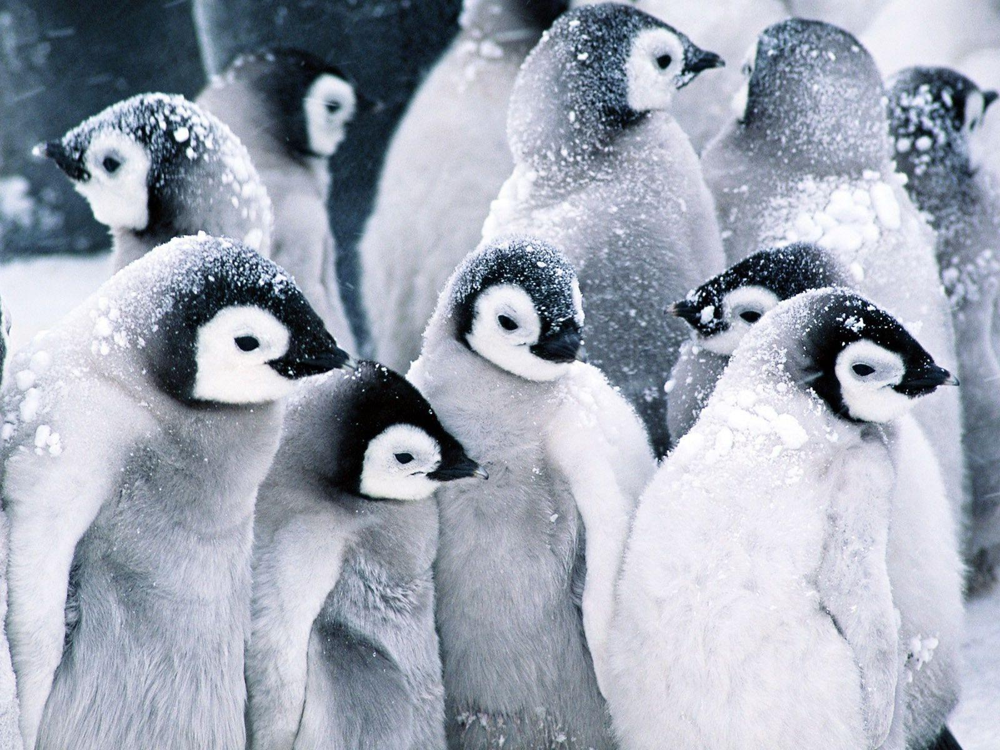

The
Secret
Life
Of
Birds
Welcome to Secret World of Birds
Lovable Birds
Mountain Bluebird
The mountain bluebird (Sialia currucoides) is a small migratory thrush that is found in mountainous 69 districts of western North America. Mountain Bluebird is among the most beautiful birds of the West.
Black-Capped Chickadee
The black-capped chickadee (Poecile atricapillus) is a small, non-migratory, North American songbirds that lives in deciduous and mixed forests
Pardalote

Pardalotes or peep-wrens are a family, Pardalotidae, of very small, brightly coloured birds native to Australia, with short tails, strong legs, and stubby blunt beaks. This family is composed of four species in one genus, Pardalotus, and several subspecies.
Water Birds
Albatross
Albatrosses are a group of large seagoing birds in the Diomedeidae family. Scientists recognize 22 different species of Albatross. Sadly, every single species is in danger of extinction to some degree.
kingfisher
Kingfisher. Kingfishers or Alcedinidae are a family of small to medium-sized, brightly colored birds in the order Coraciiformes. They have a cosmopolitan distribution, with most species found outside the Americas. The family contains 114 species and is divided into three subfamilies and 19 genera.
penguin
Penguins are a group of aquatic flightless birds. They live almost exclusively in the Southern Hemisphere: only one species, the Galápagos penguin, is found north of the Equator. Highly adapted for life in the water, penguins have countershaded dark and white plumage and flippers for swimming
life cycle of birds
Bird life cycle stages
-
stages1 - the egg
All birds start their lives inside an egg; for the most part, which is a white, yellow, hard-shell covering the outside of the developing bird's undeveloped embryo. The number of eggs laid and the size of eggs differ starting with one species then onto the next. A few birds lay one egg while different birds lay more than one egg. A bird called Gray Partridge is known to lay around 20 eggs. The eggs are brooded by one of the parent birds, for the incipient embryo to form into a chick. A hard and bony structure frames on the baby bird's beak, which is known as the egg tooth. So as to hatch, the baby bird utilizes the egg tooth to break the eggshell.
-
stages2 - the hatching
After the bird has come out of the egg, the newly hatched bird is known as a hatchling. A hatchling is covered in the soft features and can't fly in this stage. Because of its vulnerable nature, a hatchling becomes prey to numerous huge predators. They need extraordinary parental management to grow and develop in this stage. At the point when a hatchling is developing and taken care of by its parents inside the nest, it is called to be nestling.
-
stages3 - the nesting
In this stage, the bird attempts to fly and shows certain flight qualities. At the point when a nestling builds up its flight capacities and is set up to take its first flight, the bird is known as a fledgeling.
-
stages4 - the fledgeling
A fledgeling has completely developed plumes and solid muscle wings. Despite the fact that they have every one of these highlights, fledgelings are still under the consideration of their folks at some point. In this stage, the bird flies out of the nest yet not at significant distances. The timespan of this stage in birds changes starting with one stage then onto the next.
-
stages5 - the juvenil
In this stage, the young birds are yet not completely grown as they don't have adult plumage. In this stage, the young birds are not explicitly mature too. Again this changes, depending upon the sort of species of birds. Some bird species explicitly mature in this stage, while some don't.
-
stages6 - the sub adult
In this stage, the young birds are yet not completely grown as they don't have adult plumage. In this stage, the young birds are not explicitly mature too. Again this changes, depending upon the sort of species of birds. Some bird species explicitly mature in this stage, while some don't.
-
stages7 - the adult
The adult bird has conclusive plumage and is explicitly mature. In this stage, the bird can mate and perform rearing.